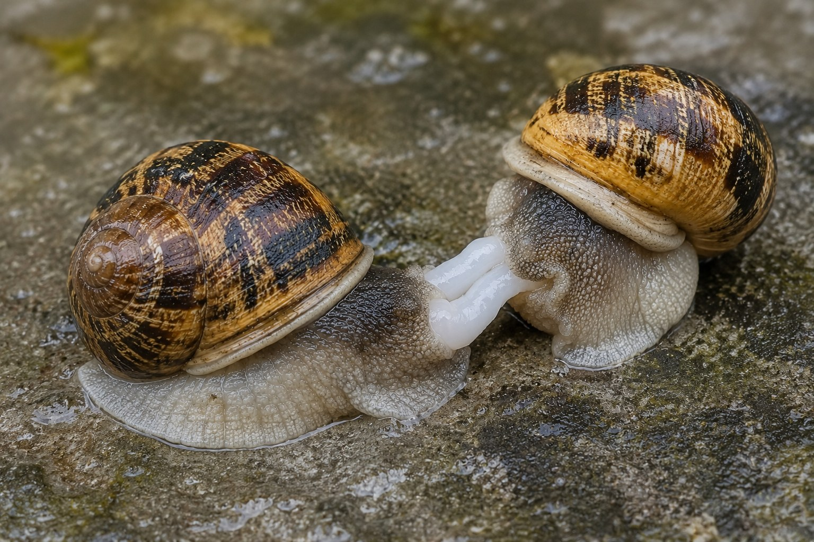
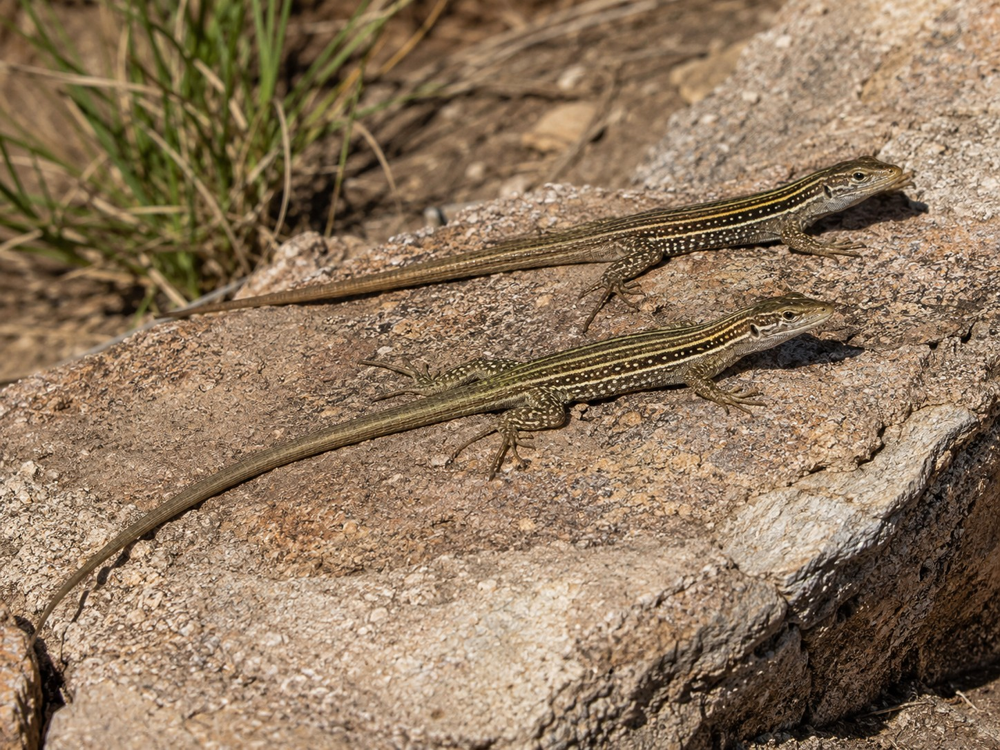
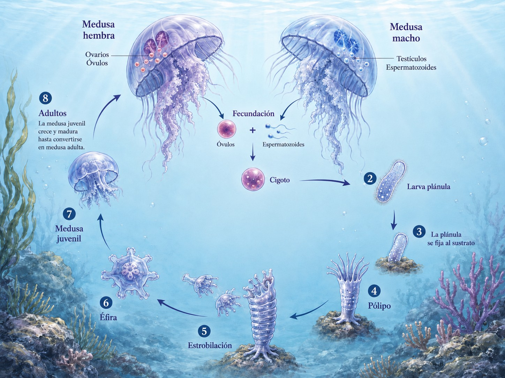
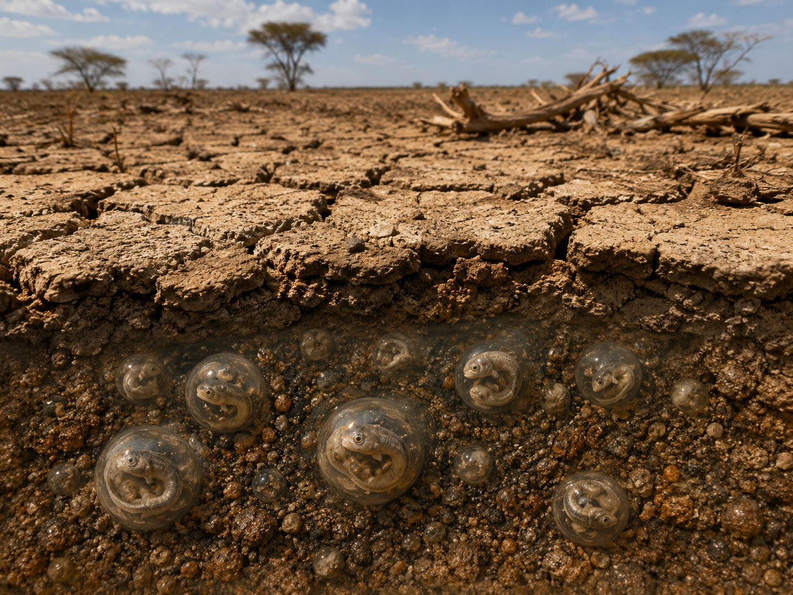

Una vez que la vida aprendió a copiarse, apareció un problema nuevo. Una copia solo sirve si consigue llegar al futuro.
En el artículo ¿Es la vida digital el siguiente paso de la evolución? seguíamos el rastro desde las primeras moléculas replicadoras hasta las carcasas cada vez más complejas que terminaron protegiéndolas: vesículas, células, cuerpos, cerebros. Pero entre la primera molécula capaz de repetirse y un animal que deja descendencia existe otra historia igual de importante. La vida no solo tuvo que aprender a copiar información. Tuvo que aprender a conservarla, mezclarla, transportarla y hacerla atravesar periodos en los que el organismo que la llevaba no podía seguir adelante.
Vista desde ahí, la reproducción sexual de los mamíferos es únicamente una de muchas soluciones. Funciona extraordinariamente bien para nuestro linaje, pero no es una plantilla general. Una bacteria se divide. Una hidra produce una yema. Una planaria puede partirse y reconstruir dos cuerpos. Un pulgón alterna clonación y sexo según la estación. Una hembra de dragón de Komodo puede producir descendencia sin fecundación. Algunas lagartijas forman especies enteras de hembras partenogenéticas. Una medusa utiliza una fase sexual y otra asexual dentro del mismo ciclo. Un pez anual puede pasar la estación seca reducido a un embrión detenido dentro del barro. Una semilla puede esperar años. Un huevo microscópico puede viajar pegado a la pata de un ave acuática. Y un árbol que no puede dar un solo paso puede conseguir que un mono, un elefante o un pájaro transporte a su descendencia kilómetros más allá.
Son mecanismos distintos porque los cuerpos también lo son. No son opciones que un organismo pueda elegir. Un mamífero no puede reproducirse por fisión porque su desarrollo, su anatomía y su regulación genética no están construidos para ello. Del mismo modo, no se conoce en los mamíferos un cambio funcional de sexo como parte normal del ciclo reproductivo, mientras que determinados peces teleósteos sí poseen esa capacidad. Cada solución existe dentro de una historia evolutiva concreta y de unas restricciones concretas.
También conviene precisar una palabra. Decimos a menudo que «la vida busca», «prueba» o «encuentra» una solución. Es una metáfora útil, no una intención. La evolución no sabe qué necesita el futuro. Variaciones heredables aparecen por mutación, recombinación, duplicación, hibridación o cambios del desarrollo; las que permiten dejar más descendencia en unas condiciones determinadas tienden a permanecer. Las demás desaparecen. Lo que contemplamos hoy es el resultado de casi cuatro mil millones de años de ese filtro.
No vemos todos los intentos de la vida. Vemos, sobre todo, los que consiguieron llegar hasta nosotros.
El verdadero problema: copiarse, resistir y llegar a otro lugar
La palabra reproducción puede hacernos imaginar un único problema: producir un descendiente. En realidad, cualquier linaje duradero tiene que resolver varios a la vez. Primero debe conservar suficiente información para que la siguiente generación siga perteneciendo al mismo sistema biológico. Después necesita introducir variación, porque un linaje incapaz de cambiar queda expuesto cuando cambia el entorno. Además, tiene que sobrevivir a inviernos, sequías, falta de alimento, depredadores o catástrofes. Y finalmente debe evitar que todos sus descendientes compitan exactamente en el mismo punto del espacio.
La vida ha atacado esas dificultades desde ángulos muy distintos. A veces las resuelve en el cuerpo adulto. Otras veces las desplaza al huevo, a la espora, a la semilla o a una fase larvaria. En algunos casos utiliza otro individuo de la misma especie. En otros, recluta a una especie distinta. Y en los casos más extremos, en lugar de soportar un ambiente desfavorable, suspende casi por completo la actividad y espera.
Mapa: un mismo objetivo, problemas diferentes
| Problema | Algunas soluciones evolutivas | Ejemplos |
|---|---|---|
| Conservar la información | Copia del ADN, reparación, protección en células, huevos, semillas o quistes | Bacterias, animales, plantas, Artemia |
| Generar variación | Mutación, recombinación, sexo, intercambio horizontal de genes | Bacterias, mamíferos, plantas |
| Reproducirse cuando la pareja escasea | Hermafroditismo, partenogénesis, alternancia sexual-asexual | Pulgones, Komodo, lagartijas, himenópteros |
| Atravesar periodos imposibles | Diapausa, quistes, esporas, semillas, criptobiosis | Peces anuales, tardígrados, helechos |
| Alcanzar un lugar nuevo | Larvas, viento, frutos, transporte externo o digestivo por animales | Plantas, invertebrados acuáticos, peces |
Ese mapa es más útil que una lista de tipos de reproducción porque deja ver la continuidad. Desde el primer replicador, la cuestión nunca ha sido fabricar un cuerpo concreto. Ha sido conseguir que la organización capaz de copiarse no termine con el individuo que la contiene.
Primera pista: antes del sexo, la vida ya había separado copiar de cambiar
Las bacterias son un buen punto de partida porque muestran que reproducción y mezcla genética no tienen por qué ocurrir en el mismo acto. Una bacteria típica crece, duplica su ADN y se separa mediante fisión binaria. No hay macho, hembra, gametos ni fecundación. Una célula da lugar a dos y, salvo mutaciones surgidas durante la copia, ambas heredan versiones muy parecidas del mismo genoma.
Podría parecer un sistema condenado a producir copias casi idénticas. No lo está. Las bacterias pueden adquirir ADN que no procede directamente de su progenitor. Algunas incorporan fragmentos libres del medio mediante transformación. Otras transfieren material genético por contacto directo mediante conjugación. Los bacteriófagos, virus que infectan bacterias, pueden llevar fragmentos de ADN de una célula a otra mediante transducción.
Ese intercambio horizontal cambia por completo la imagen del árbol genealógico. En organismos como nosotros, la mayor parte de la información hereditaria desciende verticalmente de padres a hijos. En bacterias, determinados genes pueden saltar lateralmente entre linajes. Por eso una adaptación útil, como ciertos mecanismos de resistencia a antibióticos, puede propagarse sin esperar a que aparezca de nuevo por mutación en cada población.
La distinción es profunda. La fisión resuelve la continuidad. El intercambio horizontal aumenta el repertorio disponible. Miles de millones de años antes de que existiera la meiosis, la vida ya había encontrado una forma de separar dos necesidades que continúan siendo fundamentales: hacer una copia y evitar que todas las copias sean iguales.
El sexo eucariota llevaría esa segunda operación mucho más lejos. Durante la meiosis, los cromosomas homólogos se emparejan, intercambian segmentos y se distribuyen en gametos con una sola copia de cada juego cromosómico. Cuando dos gametos se fusionan, el nuevo individuo reúne combinaciones que no estaban presentes exactamente en ninguno de sus progenitores.
Es un sistema costoso. Exige encontrar pareja en muchas especies, producir gametos especializados y transmitir solo una parte del propio genoma a cada descendiente. La existencia misma del sexo ha sido uno de los grandes problemas de la biología evolutiva precisamente porque una hembra que pudiera producir hijas fértiles sin machos tendría, en principio, una ventaja reproductiva enorme. Sin embargo, la recombinación también rompe asociaciones genéticas, reúne variantes útiles y ayuda a las poblaciones a responder a ambientes cambiantes, parásitos y mutaciones perjudiciales. No existe una explicación única que resuelva por completo por qué el sexo se mantiene en tantos linajes; existen varias ventajas que pueden operar con distinta intensidad según el organismo y el ambiente.
Copiar conserva. Mezclar impide que la conservación se convierta en inmovilidad.
Bibliografía de esta sección
Horizontal Gene Transfer — Evolution, Medicine, and Public Health
Genetic Exchange — NCBI Bookshelf
The evolutionary maintenance of sexual reproduction — Nature Reviews Genetics
Segunda pista: macho y hembra son una solución concreta, no la definición de reproducción
En nuestra especie la reproducción sexual parece inseparable de dos tipos de individuos. La mayoría de nuestras células contiene 46 cromosomas organizados en 23 pares. Los primeros 22 pares son autosomas; el par 23 corresponde a los cromosomas sexuales. En el esquema humano habitual, las mujeres son XX y los hombres XY. Los óvulos aportan siempre un cromosoma X y los espermatozoides pueden aportar X o Y; la presencia del gen SRY, situado normalmente en el cromosoma Y, participa en el inicio de la vía de desarrollo testicular. Existen variaciones cromosómicas y del desarrollo sexual, pero el mecanismo reproductivo ordinario de nuestra especie está construido alrededor de dos clases de gametos, óvulos y espermatozoides, producidos en cuerpos especializados.
Ese reparto permite introducir una distinción que reaparecerá varias veces en este recorrido. En los humanos, como en la mayoría de los animales, las células del cuerpo son diploides: contienen dos juegos de cromosomas, uno heredado de la madre y otro del padre. Nuestros 46 cromosomas forman 23 pares. Los gametos, en cambio, son haploides. Un óvulo o un espermatozoide contiene solo 23 cromosomas, una copia de cada par. Durante la meiosis se reduce a la mitad la dotación cromosómica y, cuando dos gametos se unen, el cigoto recupera los 46. La reproducción sexual puede verse así como una operación repetida durante generaciones: separar dos juegos, mezclarlos y volver a reunirlos en una nueva carcasa.
Ni siquiera esa relación entre fecundación, número de cromosomas y sexo funciona igual en todos los animales. En abejas, avispas y hormigas aparece con frecuencia la haplodiploidía: los machos se desarrollan a partir de huevos no fecundados y son haploides, mientras que las hembras proceden de huevos fecundados y son diploides. En una colonia de abejas, por ejemplo, una reina apareada puede almacenar esperma y utilizarlo para fecundar determinados huevos, de los que surgirán hembras, o dejar otros sin fecundar, de los que surgirán machos. Reina y obreras son ambas hembras diploides; sus destinos distintos dependen después del desarrollo, la alimentación y la regulación de la expresión genética. El mismo problema —producir nuevas generaciones, machos y hembras— queda resuelto con reglas cromosómicas muy distintas de las de un mamífero.
En otros animales, ni siquiera son los cromosomas los que deciden por sí solos si el embrión desarrollará ovarios o testículos. En muchas tortugas y en los crocodilianos aparece la determinación sexual dependiente de la temperatura. Durante una ventana concreta del desarrollo embrionario, la temperatura a la que se incuban los huevos modifica la actividad de genes que conducen a la formación de unas gónadas u otras. El ambiente entra así directamente en una decisión que en nuestra especie queda ligada principalmente a los cromosomas sexuales.
Y ni siquiera existe una regla térmica universal. En muchas tortugas, temperaturas relativamente bajas producen principalmente machos y temperaturas más altas, hembras. En los crocodilianos el patrón puede ser distinto y varía según la especie: determinadas temperaturas intermedias favorecen la aparición de machos, mientras que temperaturas más bajas o más altas pueden producir hembras. En estas especies, la temperatura del nido participa durante un periodo crítico de la incubación en la determinación de qué vía sexual seguirá el embrión.
Pero producir dos tipos de gametos solo resolvía una parte del problema. Después había que conseguir que se encontraran. En muchos animales acuáticos la solución consiste en liberar ambos al medio. En numerosos peces, la hembra expulsa los óvulos y el macho libera espermatozoides sobre ellos o muy cerca; en muchas ranas, el macho abraza a la hembra durante el amplexo y fecunda externamente los huevos a medida que ella los deposita. El agua mantiene los gametos hidratados y permite el desplazamiento de los espermatozoides, aunque el sistema suele compensar las enormes pérdidas con una producción muy elevada de gametos y una sincronización precisa.
La fecundación interna resolvió el encuentro de otra manera. Los gametos masculinos se depositan dentro del aparato reproductor femenino, protegidos del medio exterior y mucho más cerca del lugar donde puede producirse la fecundación. Eso no obliga a que el embrión se desarrolle dentro de la madre: aves y la mayoría de los reptiles fecundan internamente y después ponen huevos. El cambio importante está en el lugar donde se encuentran el óvulo y el espermatozoide, con independencia de que el desarrollo posterior ocurra dentro o fuera del cuerpo materno.
En nuestra especie, el pene deposita el semen profundamente en la vagina, cerca del cuello uterino. No elimina la barrera química vaginal, pero evita que los espermatozoides tengan que recorrer desde el exterior todo ese trayecto por sí mismos. La vagina humana mantiene normalmente un medio ácido que ayuda a dificultar el crecimiento de numerosos microorganismos y que también resulta hostil para los espermatozoides. El semen amortigua temporalmente esa acidez en la zona donde se deposita y una pequeña fracción de los espermatozoides alcanza el moco cervical, especialmente favorable alrededor de la ovulación, para continuar hacia el útero y las trompas. Anatomía, química y momento del ciclo trabajan aquí como partes de un mismo sistema de encuentro y selección.
Lo llamativo es que soluciones funcionalmente parecidas aparecieron en linajes remotísimos. Muchos insectos poseen un órgano intromitente, el aedeagus, con el que el macho introduce el esperma en el aparato reproductor de la hembra. No es el mismo órgano que el pene de un mamífero ni procede de un antepasado común que ya lo tuviera: es otra solución evolutiva al mismo problema físico, colocar los gametos dentro del cuerpo de la pareja.
Ese modelo es común entre mamíferos placentarios y marsupiales, aunque ni siquiera todos los mamíferos utilizan exactamente el mismo sistema cromosómico. Y, sobre todo, no debe proyectarse sobre el resto de la vida. En muchas plantas y animales, un mismo individuo produce los dos tipos de gametos. Es el hermafroditismo simultáneo. Para un animal que se mueve poco o tiene pocas oportunidades de encuentro, poder aparearse con cualquier adulto compatible puede ser una ventaja evidente.

Los caracoles terrestres ofrecen una variante especialmente gráfica de esa solución. Muchas especies son hermafroditas simultáneas y cada individuo posee aparato reproductor masculino y femenino. Durante el apareamiento, dos caracoles pueden acoplar sus órganos copuladores y transferirse esperma de forma recíproca; después, cada uno puede utilizar el esperma recibido para fecundar sus propios óvulos. En lugar de dividir a la población en machos y hembras, cada encuentro entre dos adultos compatibles puede permitir que ambos actúen como donantes y receptores de gametos.

Los gusanos solitarios llevan esa lógica por un camino todavía más extraño. Las tenias son parásitos intestinales de mamíferos y algunas especies pueden infectar al ser humano y alcanzar varios metros de longitud. Su cuerpo está formado por una sucesión de segmentos llamados proglótides. Cada proglótide madura posee órganos reproductores masculinos y femeninos, de modo que una sola tenia puede autofecundarse incluso cuando no existe otro individuo en el hospedador. A medida que los segmentos se alejan de la cabeza, maduran y los últimos terminan convertidos casi por completo en recipientes cargados de huevos. Cuando están grávidos (llenos de huevos en desarrollo) se desprenden del cuerpo y abandonan al hospedador con las heces, dispersando con ellos decenas de miles de huevos. En Taenia solium, una sola proglótide puede contener alrededor de 50.000. Aquí, una parte del propio cuerpo se convierte literalmente en el vehículo que transporta a la siguiente generación.
En algunos hongos, incluso la división entre macho y hembra deja de servir para describir la reproducción sexual. El hongo Schizophyllum commune, que vive sobre madera, posee miles de tipos de apareamiento distintos. No son miles de sexos anatómicos. Cada micelio lleva una combinación genética que funciona como una especie de código de compatibilidad, y puede reproducirse con otro siempre que sus combinaciones sean compatibles. Como existen numerosas variantes de los genes que controlan esa compatibilidad, sus combinaciones producen decenas de miles de tipos de apareamiento; las estimaciones clásicas sitúan el número potencial por encima de 20.000. Siguen interviniendo dos individuos, pero ya no pertenecen a dos categorías fijas equivalentes a macho y hembra. La reproducción sexual puede funcionar también como una enorme red de compatibilidades genéticas.
Hasta aquí cambia la manera de reunir los gametos. En otros linajes cambia incluso qué individuo produce cada tipo de gameto a lo largo de su vida.
Otros organismos desempeñan ambas funciones en momentos distintos de su vida. Ahí aparece el hermafroditismo secuencial de determinados peces. Los peces payaso son protándricos: los individuos funcionalmente reproductores comienzan como machos y el ejemplar dominante puede transformarse en hembra. En numerosos lábridos ocurre el recorrido contrario, de hembra a macho, llamado protoginia. Un ejemplo muy cercano es la doncella mediterránea (Coris julis), habitual en nuestras costas, cuyas hembras pueden transformarse funcionalmente en machos a lo largo de su vida. La transformación afecta al comportamiento, a la regulación hormonal, a las gónadas y en muchas especies también al aspecto externo.En el agua aparece una arquitectura reproductiva distinta de la de los mamíferos. Los teleósteos reúnen una diversidad extraordinaria de sistemas de determinación sexual y plasticidad gonadal; las revisiones comparativas señalan que el cambio funcional de sexo como parte normal del ciclo vital es una especialización de determinados peces y no un mecanismo reproductivo presente en los mamíferos.
¿Por qué cambiar? La respuesta depende de la estructura social. Si el éxito reproductivo de un macho aumenta mucho con el tamaño porque los machos grandes monopolizan grupos de hembras, puede resultar ventajoso reproducirse primero como hembra y transformarse en macho al alcanzar un tamaño suficiente. En el pez payaso la lógica es distinta. Los grupos viven asociados a una anémona y existe una jerarquía. La hembra es el individuo mayor; si desaparece, el macho reproductor puede cambiar de sexo y otro miembro del grupo asciende a macho reproductor. La capacidad no aparece porque el animal «necesite» conscientemente una hembra. Persiste porque, en ese sistema social, los linajes con esa respuesta dejaron descendencia con mayor eficacia.
La lección apunta casi en la dirección contraria: la biología puede construir sistemas sexuales muy rígidos o muy plásticos, pero cada uno funciona dentro de la anatomía y del desarrollo de su linaje..
Los mamíferos también esconden excepciones sorprendentes dentro de un esquema que nos parece familiar. El armadillo de nueve bandas (Dasypus novemcinctus) practica una forma regular de poliembrionía: tras una única fecundación, el embrión se divide y origina normalmente cuatro crías procedentes del mismo cigoto y, por tanto, genéticamente prácticamente idénticas. Los cuatro individuos proceden de una sola combinación genética que, durante el desarrollo, se multiplica en cuatro cuerpos. Una fecundación produce una copia y después esa copia embrionaria se replica varias veces.
Nuestra propia forma de reproducirnos tampoco representa una culminación ni una versión superior. La fecundación interna, la gestación y la gran inversión que muchos mamíferos realizan en unas pocas crías constituyen una estrategia costosa, pero eficaz dentro de determinadas condiciones. Un pez que libera miles o millones de gametos al agua sigue otra. Una abeja haplodiploide, otra. Un caracol hermafrodita, otra. Ninguna es una versión incompleta de las demás. No hay un sistema universalmente mejor o peor: hay soluciones distintas que han atravesado el mismo filtro evolutivo y han conseguido dejar descendencia viable. La nuestra es, sencillamente, la que heredó nuestro linaje.
La evolución no ha buscado la mejor forma de reproducirse. Ha conservado las que, en algún lugar y durante suficiente tiempo, consiguieron funcionar.
Bibliografía de esta sección
Chromosomes Fact Sheet — National Human Genome Research Institute
Temperature-dependent sex determination is mediated by pSTAT3 repression of Kdm6b — Science (2020)Temperature-Dependent Sex Determination in Crocodilians — PMC (2024)
Environmental Cues and Mechanisms Underpinning Sex Change in Fish — PMC
Sex Change in Clownfish: Molecular Insights — Scientific Reports
Testicular inducing steroidogenic cells trigger sex change in fish — Scientific Reports
Vaginal, Cervical and Uterine pH in Women with Normal and Abnormal Vaginal Microbiota — PMC
In vivo semen-associated pH neutralization of cervicovaginal secretions — PMC
A novel sperm adaptation to evolutionary constraints on reproduction — Proceedings B / PMC
Factors Affecting Sperm Quality Before and After Mating of a Damselfly — PMC
Strategic ejaculation in simultaneously hermaphroditic land snails — BMC Evolutionary Biology / PMC
Evolution of the complementary sex-determination gene of honey bees — PMC
The evolution of non-reproductive workers in insect colonies — PMC
Population Dynamics and Range Expansion in Nine-Banded Armadillos — PMC
Tercera pista: ni siquiera las fronteras entre especies siempre son definitivas
El sexo introdujo una posibilidad enorme: mezclar dos historias genéticas antes de fabricar una nueva carcasa. Pero ni siquiera esa mezcla queda siempre encerrada dentro de los límites que nosotros llamamos especie. Una especie no aparece de un día para otro. Dos poblaciones pueden ir separándose durante miles o millones de generaciones y conservar todavía parte de su compatibilidad reproductiva.
Por eso la historia evolutiva no siempre tiene la forma de un árbol de ramas limpias que nunca vuelven a tocarse. En muchos grupos se conocen episodios de hibridación entre linajes ya diferenciados. A veces los descendientes son inviables. Otras veces viven, pero apenas pueden reproducirse. Y en algunos casos siguen siendo fértiles y vuelven a cruzarse con una de las poblaciones de origen. Entonces ciertos genes atraviesan la frontera entre especies mediante un proceso llamado introgresión y pasan a formar parte estable de otro linaje.
No es un mecanismo diseñado para rescatar poblaciones que se quedan sin pareja. La evolución no prevé esa necesidad. Es otra consecuencia de que las fronteras biológicas se construyen de forma gradual. Mientras dos genomas sigan siendo suficientemente compatibles, la mezcla puede ocurrir. Si alguna combinación resultante deja descendencia con éxito, esa combinación también entra en el juego de la selección.
El caballo y el burro muestran lo que ocurre cuando esa compatibilidad ya está muy cerca del límite. El caballo posee 64 cromosomas y el burro 62. Su híbrido, el mulo, suele tener 63. El animal puede desarrollarse con normalidad, ser fuerte y vivir muchos años, pero al formar gametos aparece un problema: durante la meiosis los cromosomas deben encontrar parejas homólogas y repartirse de forma ordenada. Con un número impar y con cromosomas que ya han seguido historias evolutivas distintas, ese emparejamiento falla con frecuencia. Por eso los mulos y los burdéganos son normalmente estériles.
Incluso aquí la frontera no es absoluta. Se han descrito casos excepcionales de mulas fértiles, sobre todo hembras. Son rarísimos, pero recuerdan algo importante: entre dos especies completamente compatibles y dos especies incapaces de producir descendencia no existe necesariamente una línea única y perfecta. Hay grados de separación, y la vida puede permanecer durante mucho tiempo en esas zonas intermedias.
Podría parecer que un híbrido estéril representa el final de una rama. Dos carcasas todavía suficientemente próximas para producir un individuo, pero demasiado diferentes para que ese individuo continúe la cadena. Sin embargo, algunas lagartijas látigo muestran hasta qué punto la evolución puede reutilizar precisamente una situación de hibridación para abrir otro camino.

En varios linajes de Aspidoscelis, antiguas hibridaciones entre especies sexuales dieron origen a taxones unisexuales formados únicamente por hembras que se reproducen por partenogénesis. Ya no necesitan que un espermatozoide aporte la segunda mitad del genoma. Sus células germinales utilizan mecanismos que permiten recuperar la dotación cromosómica necesaria y producir huevos capaces de desarrollarse sin fecundación. Una mezcla entre dos linajes sexuales terminó asociada, en esos casos, a un tercero capaz de continuar sin machos.
La historia conserva además una huella sorprendente de su pasado sexual. En algunas de estas lagartijas, como la antigua Cnemidophorus uniparens, hoy incluida en Aspidoscelis, las hembras realizan conductas de cortejo y pseudocopulación entre ellas. Dependiendo de la fase del ciclo ovárico, una adopta un comportamiento parecido al femenino y otra uno parecido al masculino; después pueden intercambiar los papeles. No hay inseminación ni transferencia de esperma.
Podría parecer un simple residuo de un instinto que ya perdió su función. No lo es del todo. Los experimentos clásicos y las revisiones posteriores indican que esa pseudocopulación puede aumentar la fecundidad al reducir el tiempo hasta la ovulación de la hembra montada. La evolución no borró el sistema anterior y diseñó otro desde cero. Conservó circuitos hormonales y conductuales heredados de antepasados sexuales y los integró en una estrategia reproductiva distinta.
A veces dos genomas se mezclan y producen un callejón sin salida. Otras veces, de esa misma mezcla aparece una forma nueva de continuar.
Ese caso abre la puerta a la partenogénesis, pero también muestra por qué conviene no hablar de ella como si fuera un único mecanismo. «Tener descendencia sin fecundación» describe el resultado, no el camino biológico que conduce hasta él.
Entre la partenogénesis y la reproducción sexual existe todavía una solución más extraña. La molly amazónica (Poecilia formosa) está formada por hembras y se reproduce mediante ginogénesis, también llamada partenogénesis dependiente del esperma. La hembra necesita aparearse con un macho de una especie emparentada: el espermatozoide activa el desarrollo del óvulo, pero normalmente su ADN no se incorpora al genoma de la descendencia. Las hijas heredan esencialmente el genoma materno. De manera ocasional puede incorporarse material genético paterno, lo que hace el sistema todavía menos absoluto. Necesita esperma para iniciar una nueva generación, pero normalmente no necesita los genes del macho.
Los pulgones muestran una de las versiones más elegantes porque alternan estrategias. En muchas especies, durante las estaciones favorables las hembras producen nuevas hembras por partenogénesis y pueden multiplicar una población a enorme velocidad. Cuando cambian el fotoperiodo y otras señales ambientales, aparecen formas sexuales. La fecundación produce huevos resistentes capaces de atravesar condiciones desfavorables. El mismo linaje utiliza la clonación para expandirse rápidamente cuando el entorno es favorable y vuelve al sexo cuando resulta ventajoso generar diversidad y producir una fase resistente.

El dragón de Komodo ofrece una lógica distinta. Su sistema sexual es ZW/ZZ: las hembras son ZW y los machos ZZ. En los casos documentados de partenogénesis facultativa, una hembra puede restaurar la dotación cromosómica de un óvulo sin fecundación. Las combinaciones WW no son viables; las ZZ sí lo son. Por eso los descendientes partenogenéticos supervivientes son machos. En una hembra aislada, ese mecanismo puede producir individuos del sexo que falta y hacer posible una reproducción sexual posterior, aunque a costa de una diversidad genética muy reducida.
En abejas, avispas y hormigas aparece otra solución todavía más alejada de nuestra intuición. En muchos himenópteros es frecuente la haplodiploidía: los huevos fecundados originan hembras diploides y los huevos no fecundados pueden originar machos haploides. Un macho puede tener madre y no tener padre. Aquí la ausencia de fecundación no es una respuesta excepcional a una emergencia. Forma parte normal del sistema reproductivo.
Lo importante no es memorizar qué animal utiliza cada mecanismo. Es observar el patrón. La misma dificultad, conseguir que una combinación genética alcance la generación siguiente, ha sido resuelta de maneras distintas porque cada linaje parte de una maquinaria previa diferente. La evolución trabaja con lo que ya existe. Mezcla, modifica, duplica y reutiliza. No empieza de cero.
Bibliografía de esta sección
Testicular Characteristics and the Block to Spermatogenesis in Mules and Hinnies — PMC
Evolutionary insights into sexual behavior from whiptail lizards — PMC
Aphid polyphenisms and cyclical parthenogenesis — PMC
Parthenogenesis in Komodo dragons — Nature (2006)
Sex Determination in the Hymenoptera — Annual Review of Entomology
The origin and evolution of a unisexual hybrid: Poecilia formosa — PMC
Cuarta pista: a veces la frontera entre crecer, reparar y reproducirse casi desaparece
En un mamífero la identidad física del individuo parece clara. Perdemos una parte del cuerpo y, salvo tejidos con capacidad limitada de regeneración, no nace otra persona de ella. En otros animales la frontera es mucho menos rígida. Y antes de llegar a la reproducción por fragmentación conviene distinguir dos cosas que utilizan parte de la misma maquinaria: reparar un cuerpo y fabricar otro a partir de una parte del primero.
La regeneración aparece en grados muy distintos. Muchos lagartos pueden desprenderse voluntariamente de la cola para escapar de un depredador y formar después otra funcional, aunque la nueva cola no reproduce exactamente la anatomía de la original. Las salamandras —que son anfibios, no reptiles— llevan esa capacidad mucho más lejos. El ajolote, por ejemplo, puede regenerar una extremidad completa después de una amputación, reconstruyendo hueso, músculo, piel, vasos y nervios. En estos casos no ha nacido otro individuo. La misma carcasa ha reconstruido una parte perdida.
Las planarias llevan esa lógica hasta un límite mucho más extraño. Algunas especies se reproducen de forma asexual por fisión: el cuerpo se estrecha hasta separarse en una región anterior y otra posterior y cada fragmento reconstruye lo que le falta. Pero su capacidad no aparece únicamente cuando el animal inicia ese proceso reproductivo. Si una planaria se corta por una lesión o experimentalmente, muchos fragmentos pueden reorganizarse y regenerar las estructuras ausentes; según la especie y la zona conservada, una porción del cuerpo puede volver a formar un animal completo. El trozo con cabeza regenera una cola. Un fragmento posterior puede reconstruir una cabeza y un nuevo sistema nervioso. La misma maquinaria sirve para reparar un traumatismo y, en otras circunstancias, para multiplicar individuos.
La hidra utiliza otro camino. Mediante gemación, una zona de su cuerpo comienza a crecer, forma tentáculos y estructuras propias y termina separándose como un nuevo individuo. No hay fecundación en ese proceso. La nueva carcasa se construye directamente sobre la anterior hasta independizarse.
Las estrellas de mar permiten ver todavía mejor la diferencia entre reparación y reproducción. La mayoría de las especies se reproduce normalmente por vía sexual y tiene individuos machos y hembras separados, aunque existen también algunas especies hermafroditas. En muchas, machos y hembras liberan espermatozoides y óvulos al agua y la fecundación ocurre en el exterior. Al mismo tiempo, su capacidad regenerativa es extraordinaria: muchas pueden reconstruir brazos perdidos tras una lesión.
En determinadas especies esa reparación puede convertirse además en una estrategia reproductiva. El cuerpo se divide o pierde un fragmento suficientemente grande y la parte separada regenera lo necesario hasta formar otro individuo. Conviene evitar la versión popular de que cualquier brazo de cualquier estrella produce automáticamente una estrella completa. La capacidad depende de la especie y, con frecuencia, de que el fragmento conserve una parte suficiente del disco central. En unos linajes la fragmentación es una auténtica vía asexual; en otros, la regeneración sirve sobre todo para sobrevivir a un daño mientras la reproducción continúa siendo sexual.
Estos animales obligan a revisar una intuición. Reproducirse no siempre exige volver al principio y fabricar un embrión desde una única célula. Si un organismo conserva poblaciones celulares capaces de reconstruir el patrón corporal completo, una parte puede convertirse en un nuevo todo. Y si esa capacidad surgió primero para reparar heridas o para reproducirse es una pregunta distinta en cada linaje.
La evolución no diseña mecanismos desde cero. Reutiliza programas de crecimiento, señalización y células madre que ya existen. En un lagarto permiten rehacer una cola. En una salamandra, una extremidad. En una planaria, casi todo el cuerpo. Y en determinados animales esa misma capacidad de reconstrucción ha terminado formando parte del propio modo de reproducirse.
Bibliografía de esta sección
The cellular and molecular basis for planarian regeneration — PMC
Mechanics dictate where and how freshwater planarians fission — PMC
The regeneration blastema of lizards: an amniote model for the study of appendage replacement — PMC
Budding and pattern formation in Hydra — PMC
Use of Sea Stars to Study Basic Reproductive Processes — PMC
Quinta pista: una misma vida puede usar reglas distintas en momentos distintos
La idea de que un organismo nace, crece, se reproduce y muere parece universal porque describe bien nuestra biografía. Pero algunos ciclos vitales cambian incluso de tipo de cuerpo y de modo reproductivo entre una fase y la siguiente.
La pedogénesis lleva la alteración del ciclo vital un paso más allá. En algunos cecidómidos, pequeños dípteros conocidos como mosquitos de las agallas, una larva puede reproducirse antes de transformarse en adulto. En especies como Heteropeza pygmaea o Mycophila speyeri, los embriones se desarrollan dentro del cuerpo de una "larva madre" y originan nuevas larvas, que terminan provocando su muerte al salir. Cuando las condiciones son favorables, estas generaciones larvarias pueden sucederse sin pasar de inmediato por la fase adulta; cuando dejan de serlo, algunas larvas completan la metamorfosis y producen adultos capaces de dispersarse. Aquí, una fase que normalmente asociamos con crecer hasta la reproducción se convierte ella misma en reproductora.
Algo parecido, aunque por un mecanismo completamente distinto, ocurre en algunos anfibios. El ajolote mexicano (Ambystoma mexicanum) alcanza la madurez sexual sin completar la metamorfosis característica de otras salamandras. Conserva durante toda su vida rasgos propios de la fase larvaria, como las branquias externas y la vida acuática, y aun así machos y hembras pueden reproducirse sexualmente. Este fenómeno, conocido como paedomorfosis o neotenia, muestra otra forma de separar dos procesos que solemos imaginar unidos: un organismo puede llegar a ser reproductivamente adulto sin adoptar la forma corporal adulta de sus antepasados metamórficos.

En muchas medusas escifozoas, la medusa adulta produce gametos. Óvulo y espermatozoide forman un cigoto diploide; de él surge una larva plánula que nada durante un tiempo y termina fijándose a una superficie. Allí se transforma en un pólipo. Ese pólipo ya no se comporta como la medusa que lo originó. Puede permanecer adherido y reproducirse asexualmente. Mediante estrobilación forma pequeñas éfiras que se liberan y crecen hasta convertirse de nuevo en medusas adultas.
La secuencia parece diseñada por dos organismos diferentes:
medusa sexual → cigoto → larva → pólipo asexual → éfiras → nuevas medusas.
Pero es un único ciclo vital. La fase móvil y sexual dispersa genes; la fase adherida puede multiplicar copias localmente cuando las condiciones son adecuadas. No existe obligación alguna de que una especie escoja para siempre entre sexo y clonación.
Los helechos llevan esta alternancia todavía más lejos y además cambian la dotación cromosómica del organismo visible. El gran helecho que reconocemos es un esporófito diploide. Produce esporas haploides mediante meiosis. Cada espora puede originar un gametófito diminuto e independiente, a menudo de apenas unos milímetros, que produce gametos. Tras la fecundación aparece un nuevo esporófito diploide.
Dos generaciones de aspecto radicalmente distinto se alternan dentro de la misma historia genética. La planta grande no produce directamente otra planta grande mediante una semilla, como ocurre en las angiospermas que nos resultan más familiares. Produce una fase intermedia que tiene su propia vida.
El pulgón, la medusa y el helecho comparten una idea general aunque sus mecanismos no tengan relación directa: la estrategia que funciona en una estación, una fase o una generación no tiene por qué ser la que funciona en la siguiente. La continuidad puede consistir precisamente en cambiar de reglas durante el recorrido.
Bibliografía de esta sección
Scyphozoan jellyfish life cycles and strobilation — Frontiers in Marine Science
Jellyfish life cycle: polyps and asexual production of ephyrae — Royal Society Open Science
Seedless vascular plants and alternation of generations — OpenStax Biology
Evolutionary Perspectives on Germline-Restricted Chromosomes in Diptera — PMC
Sexta pista: continuar también puede significar detenerse
Hasta aquí casi todas las estrategias consisten en hacer algo: dividirse, fecundar, mezclar, regenerar. Pero hay ambientes en los que la mejor manera de continuar es exactamente la contraria. No crecer. No reproducirse. Reducir la actividad al mínimo y esperar.

Los peces anuales de África y Sudamérica viven en charcas temporales que pueden desaparecer por completo durante la estación seca. Los adultos mueren cuando el agua se pierde. El linaje no. Antes han depositado huevos en el sedimento. Los embriones pueden entrar en diapausa, una detención reversible del desarrollo acompañada de una extraordinaria resistencia a condiciones adversas. Durante meses, donde aparentemente ya no queda ningún pez, el futuro de la población permanece enterrado en el barro. Cuando vuelve el agua, el desarrollo continúa y una nueva generación ocupa la charca.
La estrategia cambia quién tiene que sobrevivir. No se intenta mantener vivo al adulto durante una sequía para la que su cuerpo acuático está mal preparado. Se construye una fase embrionaria especializada en atravesarla.
Artemia, los pequeños crustáceos conocidos como artemias salinas, puede producir quistes embrionarios en diapausa extremadamente resistentes a la desecación y a otras condiciones ambientales. Las plantas hacen algo parecido con semillas y esporas: concentran el futuro en estructuras que toleran periodos durante los cuales el organismo adulto no podría mantenerse activo.
Los tardígrados llevan la idea al propio cuerpo. Algunas especies, cuando pierden casi toda el agua disponible, entran en anhidrobiosis. Se contraen en una forma llamada tun, el metabolismo cae a niveles extraordinariamente bajos y una combinación de proteínas protectoras y otras adaptaciones estabiliza componentes celulares durante la desecación. Al rehidratarse, pueden recuperar la actividad.
No conviene convertirlos en criaturas indestructibles: distintas especies poseen tolerancias distintas y la supervivencia disminuye con el tiempo y con la intensidad del estrés. Pero conceptualmente son extraordinarios porque muestran que la continuidad biológica no exige actividad continua.
Un linaje puede cruzar una época hostil retirándose temporalmente del ambiente hasta que las condiciones vuelvan a ser favorables.
Las carcasas, por tanto, no solo protegen en el espacio. También protegen en el tiempo. Un huevo, un quiste, una espora o una semilla pueden funcionar como cápsulas que separan la información hereditaria de un presente desfavorable y la entregan a un futuro mejor.
Bibliografía de esta sección
Convergent evolution of developmental trajectories in annual killifish — PMC
Nothobranchius furzeri, an instant fish from an ephemeral habitat — PMC
Mechanisms of Desiccation Tolerance: Artemia, nematodes and tardigrades — PMC
Tardigrades use intrinsically disordered proteins to survive desiccation — PMC
Séptima pista: sobrevivir no basta si todos los descendientes se quedan en el mismo sitio
Una semilla perfecta que cae siempre debajo del árbol que la produjo tiene un problema. Competirá por la misma luz, el mismo agua y los mismos nutrientes. Una larva marina que jamás abandona a sus progenitores no coloniza nuevos fondos. Un organismo de una charca aislada puede desaparecer localmente si una sequía termina con todos sus estadios resistentes y nada vuelve a llegar desde fuera.
Por eso la continuidad tiene una dimensión geográfica. La vida necesita desplazarse incluso cuando el organismo que produce la descendencia no puede hacerlo.
El océano está lleno de adultos inmóviles o poco móviles que producen fases microscópicas transportadas por las corrientes. Corales, moluscos y numerosos invertebrados convierten parte de su ciclo en una fase larvaria capaz de viajar mucho más lejos que el adulto. Las plantas utilizan el viento para mover polen, esporas o semillas. Otras construyen alas, vilanos, ganchos o frutos.
En los ecosistemas de agua dulce aparece un problema particularmente interesante. Dos lagunas pueden estar separadas por kilómetros de tierra seca. Sin embargo, pequeños crustáceos, rotíferos, briozoos, moluscos y plantas acuáticas aparecen en masas de agua aisladas. Parte de esa conexión puede viajar con las aves acuáticas.
La idea es antigua. Darwin ya experimentó con la posibilidad de que pequeños propágulos acuáticos quedaran adheridos a las patas de los patos. Hoy sabemos que huevos de invertebrados, semillas y otras estructuras pueden quedar pegados al plumaje, al pico o a las patas, a veces incluidos en barro húmedo. Un ave despega de una charca y aterriza en otra. Para ella el material es suciedad. Para el organismo transportado es una migración.
Y el viaje puede ser todavía más improbable. En 2020, un experimento publicado en PNAS alimentó ánades reales con huevos en desarrollo de dos especies de carpas. La inmensa mayoría fue destruida durante la digestión, como cabría esperar. Pero una fracción minúscula, alrededor del 0,2 % de los huevos ingeridos, salió del aparato digestivo todavía viable, y algunos embriones eclosionaron después. No significa que los patos sean el principal sistema de dispersión de los peces ni que cualquier huevo pueda soportarlo. Demuestra algo más interesante: incluso un mecanismo con una probabilidad individual diminuta puede importar si se repite millones de veces durante miles de generaciones.
Los huevos resistentes de Daphnia y otros pequeños invertebrados ofrecen posibilidades aún mayores de transporte externo o interno por aves. En estos casos, la adaptación que permite sobrevivir a la sequía puede servir además para viajar. Una misma estructura resuelve dos problemas: esperar y desplazarse.
La vida no necesita que todos los viajeros lleguen. Necesita que alguno llegue y vuelva a empezar.
Bibliografía de esta sección
Bird-mediated ectozoochorous dispersal between aquatic environments — Freshwater Biology
Multiple lines of evidence for avian zoochory — Biology Letters (2023)
Experimental evidence of dispersal of fish eggs inside migratory waterfowl — PNAS (2020)
Octava pista: cuando no puedes moverte, puedes conseguir que otro organismo se mueva por ti
Las plantas con flores llevaron la dependencia de otros organismos a un nivel extraordinario. Una planta adulta está anclada al suelo. No puede acercarse a otra planta compatible para fecundarla y tampoco puede acompañar a sus semillas hasta un lugar mejor. La solución de muchos linajes fue convertir el comportamiento de animales móviles en parte de su propio ciclo reproductivo.
En la polinización animal, el polen se adhiere al cuerpo de insectos, aves, murciélagos y otros visitantes. La flor puede ofrecer néctar, polen, aceites o aromas; colores, formas y horarios de apertura aumentan la probabilidad de atraer determinados visitantes. El animal busca alimento. La planta obtiene transporte para sus gametos masculinos.
No hay acuerdo consciente. Hay coevolución. Si una variante floral consigue que un polinizador eficaz visite más flores de la misma especie, esa planta puede dejar más descendencia. Si un animal reconoce mejor una fuente de alimento, también obtiene una ventaja. Generación tras generación, dos linajes pueden moldearse mutuamente hasta producir relaciones extremadamente especializadas.
Después de la fecundación aparece un segundo problema: alejar la descendencia. El fruto es una de las respuestas más eficaces que conocemos. La planta invierte energía en construir tejido nutritivo alrededor de las semillas. Cuando madura, cambia de color, olor, textura y composición. Un ave, un mono, un caballo, un murciélago, un elefante u otro frugívoro encuentra alimento. La semilla obtiene transporte.
Muchas semillas poseen cubiertas capaces de resistir el tránsito digestivo. El efecto del paso por el intestino no es universal: en unas especies mejora la germinación al retirar pulpa o modificar la cubierta; en otras la reduce, y depende también del animal que consuma el fruto. Lo importante es la relación ecológica. El movimiento del frugívoro determina dónde termina la semilla, y con ella la posibilidad de que la planta colonice otro espacio.
Hay algo conceptualmente hermoso en ese intercambio. Un árbol no tiene músculos, sistema nervioso ni patas. Sin embargo, una parte de su ciclo puede recorrer kilómetros porque ha evolucionado una estructura que resulta valiosa para un animal que sí puede moverse.
La planta no aprendió a caminar. Hizo que caminar formara parte de su reproducción.
Esta dependencia también muestra su fragilidad. Si desaparece un gran dispersor, una planta de semilla grande puede seguir produciendo frutos y aun así perder buena parte de su capacidad para llegar a lugares adecuados. La supervivencia de un linaje puede quedar entrelazada con la de otro.
Bibliografía de esta sección
Rapid plant evolution driven by pollinator interactions — Science
Global review of frugivorous animal movement and seed dispersal — PMC
Loss of endangered frugivores from seed dispersal networks — Proceedings B
Defaunation reduces plants' capacity to track climate change — Science (2022)
Lo que no vemos: la mayor parte de los ensayos desapareció
Cuando contemplamos todos estos mecanismos juntos aparece una tentación casi inevitable: pensar que la vida posee una capacidad interna para encontrar siempre una salida. Pero la historia natural es mucho más dura.
La inmensa mayoría de las especies que han existido está extinguida. Linajes completos desaparecieron porque el ambiente cambió demasiado rápido, porque surgió un competidor mejor, porque una población quedó aislada, porque su reproducción dependía de una relación ecológica que se rompió o simplemente porque una catástrofe eliminó a los últimos individuos. La selección natural no garantiza soluciones.
Además, conocemos mal una gran parte de los mecanismos que ya desaparecieron. Los fósiles conservan con relativa facilidad huesos, conchas, dientes o troncos. Conservan mucho peor conductas de apareamiento, ciclos larvarios, fisiología reproductiva o relaciones con especies que también se extinguieron. El repertorio actual es apenas una pequeña ventana sobre lo que la evolución ha probado, formada por los linajes que sobrevivieron hasta el presente y por los rastros que el registro fósil fue capaz de conservar.
Eso hace todavía más llamativa la diversidad que vemos. Si las formas vivas actuales ya incluyen fisión, gemación, sexo, hermafroditismo, cambio secuencial de sexo, partenogénesis facultativa u obligada, haplodiploidía, alternancia de generaciones, diapausa, criptobiosis, esporas, semillas y transporte mediante otras especies, es razonable pensar que la historia completa fue aún más extraña.
Y ninguna estrategia es perfecta. La clonación rápida reduce el coste de encontrar pareja, pero limita la recombinación. El sexo genera diversidad, pero exige una maquinaria compleja y, en muchas especies, un encuentro. La partenogénesis permite continuar sin fecundación, pero puede reducir heterocigosidad. Una semilla resistente puede esperar durante años, pero no sirve si nunca encuentra condiciones para germinar. Un fruto puede conseguir un excelente dispersor y después perderlo por extinción.
La vida no gana porque tenga una estrategia infalible. Continúa porque existen muchas estrategias y porque algunas funcionan el tiempo suficiente.
Lo que importa en EIDOS: la carcasa nunca fue el objetivo
Esta es la conexión con la idea de la carcasa que atraviesa Eidos y el artículo anterior. Una molécula replicadora no necesita que el cuerpo que la transporta sea eterno. Necesita que ese cuerpo la conserve el tiempo suficiente para que la información cruce a otra carcasa. El adulto puede morir después de poner huevos. La medusa puede desaparecer mientras persiste el pólipo. La charca puede secarse mientras los embriones permanecen en el barro. El árbol puede caer después de haber enviado semillas lejos de su sombra.
El individuo importa enormemente desde el punto de vista del individuo consciente. Pero la evolución biológica no trabaja con esa escala moral. Desde la perspectiva de la selección, un cuerpo es una solución temporal que protege, alimenta y transporta información hereditaria durante una parte del recorrido.
Por eso el concepto de «carcasa» resulta útil si se emplea con cuidado. La metáfora de la «carcasa» conserva toda la importancia del cuerpo. Permite leer la historia de la vida como una sucesión de estructuras que hacen algo que la molécula desnuda no podía hacer: defenderla, repararla, moverla, mezclarla, hacerla esperar y colocar una copia en un lugar donde pueda continuar.
La bacteria resolvió parte del problema intercambiando genes sin sexo. Los eucariotas desarrollaron meiosis y recombinación. Algunos peces hicieron del sexo una fase reversible de su ciclo. Algunos reptiles pueden activar vías partenogenéticas. Una planaria convirtió la regeneración en reproducción. Las plantas fabricaron semillas que sobreviven al progenitor y frutos que compran transporte con alimento. Los organismos de charcas temporales concentraron el futuro en huevos capaces de esperar a que el mundo vuelva a ser habitable.
En Eidos, la pregunta aparece cuando esa lógica alcanza a una entidad que sabe que existe. ¿Qué ocurre cuando la carcasa deja de proteger únicamente una molécula capaz de replicarse y pasa a contener una consciencia capaz de comprender su propia desaparición?
La biología no responde a esa pregunta. Pero sí ofrece el contexto que la vuelve menos extraña. Durante miles de millones de años, la continuidad nunca dependió de conservar una única forma. Dependió de encontrar maneras de atravesar el siguiente obstáculo.
Y quizá las formas de continuar no terminen en la biología. Si alguna vez una inteligencia artificial llegara a poseer consciencia y adquiriera además la capacidad de replicarse, aparecería un mecanismo completamente distinto de todos los anteriores. No necesitaría gametos, cromosomas ni ADN. Podría copiar su organización a otro soporte, instalar una nueva instancia en otro servidor o fabricar una carcasa física e introducir en ella el sistema que la constituye.
Ni siquiera sería necesario llamar descendientes a esas nuevas entidades. Podrían ser copias, versiones modificadas o sistemas derivados de uno anterior. Algunas quizá comenzarían siendo idénticas. Otras podrían incorporar cambios, combinar información procedente de varias entidades o desarrollar arquitecturas diferentes. Si conservaran consciencia, autonomía y continuidad propias, la diferencia con todos los ejemplos anteriores estaría en el soporte y en el mecanismo, no en la posibilidad de generar algo nuevo capaz de continuar por sí mismo.
Para una vida así, además, replicarse no tendría por qué cumplir la función que la reproducción cumple en los organismos mortales. Si una entidad pudiera mantenerse indefinidamente mientras existiera un soporte adecuado, generar nuevas instancias no sería necesariamente una defensa frente a la muerte. Sería otra capacidad: hacer que aquello que constituye a un individuo vuelva a existir en otro lugar, en otra carcasa o bajo una forma diferente.
No sería reproducción biológica y quizá nuestra propia palabra «reproducción» terminara quedándose corta. Pero, vista desde la historia que hemos recorrido, tampoco sería una ruptura absoluta. Durante miles de millones de años la vida ha encontrado innumerables maneras de copiar, mezclar, conservar y transportar la información que permite continuar. Una forma de vida artificial consciente capaz de generar copias o nuevas versiones de sí misma añadiría, simplemente, otra posibilidad.
La molécula habría dejado de ser necesaria. La posibilidad de continuar, no.
Primero fue copiar. Después proteger la copia. Después mezclarla, detenerla, reconstruirla o enviarla lejos. La historia de la vida es, en buena medida, la historia de todo lo que tuvo que ocurrir para que una molécula no terminara donde había empezado.
Las mil formas de continuar
Quizá la imagen más sencilla sea también la más precisa. Hace casi cuatro mil millones de años, alguna organización química consiguió producir algo parecido a una copia de sí misma. Desde entonces, todo lo demás puede contemplarse como una ampliación de aquel acontecimiento.
Una membrana hizo que la copia tuviera un interior. Un metabolismo permitió sostenerlo. El ADN mejoró el archivo. El intercambio genético y el sexo multiplicaron combinaciones. Los cuerpos hicieron posible buscar recursos, escapar, competir y cuidar descendencia. Los huevos, esporas y semillas separaron una generación de la siguiente. La diapausa permitió atravesar meses sin condiciones de vida activa. Las larvas, el viento y los animales conectaron lugares que de otro modo habrían permanecido aislados.
No existe una marcha ordenada desde lo simple hacia lo complejo. Las bacterias siguen prosperando. La fisión no fue sustituida por el sexo. La clonación no desapareció cuando apareció la meiosis. Las plantas no abandonaron la reproducción asexual al desarrollar flores. Las soluciones se acumulan, se combinan, se pierden y reaparecen en linajes distintos.
Si usamos por última vez la metáfora de que la vida «intenta» continuar, hay que entenderla así: cada mutación, cada recombinación y cada cambio del desarrollo abre una posibilidad sin saber adónde conduce. La mayoría no funda un nuevo camino. Algunas duran unas generaciones. Unas pocas atraviesan millones de años. Y nosotros solo podemos observar las que llegaron hasta este instante.
Por eso quizá la conclusión no sea que la naturaleza siempre encuentra una salida. No siempre la encuentra.
La conclusión es más interesante.
Cuando una salida existe, la evolución puede encontrarla de formas que desde nuestra propia biología jamás habríamos imaginado.
Bibliografía general
Comparing and Contrasting Knowledge on Mules and Hinnies — PMC
Evolutionary insights into sexual behavior from whiptail lizards — PMC
Horizontal Gene Transfer — Evolution, Medicine, and Public Health
Environmental Cues and Mechanisms Underpinning Sex Change in Fish — PMC
Parthenogenesis in Komodo dragons — Nature
Evolutionary network of whiptail lizards — Science
Asexual fission in planarians — PMC
Diapause in annual killifish — PMC
Tardigrade desiccation tolerance — PMC
Fish egg dispersal by waterfowl — PNAS
Comentarios